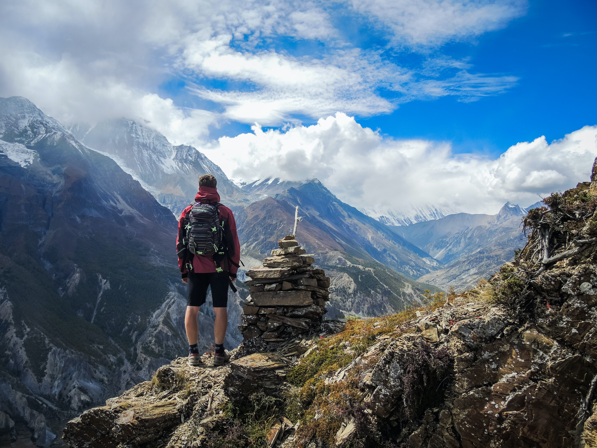
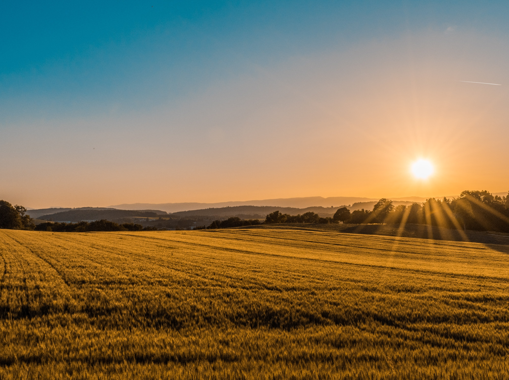

Our Place
This is the Manic Pro beautiful places that you guys will surely love and enjoy.

Mountain
This Mountain in Manic Pro is the best place to do Hiking, Camping, Rock Climbing and Mountain Biking.

Lake
This Lake in Manic Pro is the best place to do Canoeing, Kayaking, Fishing and also a Picnic Area.

Land
This Land in Manic Pro is the best place to do ATV Riding, Horseback Riding, Biking and also for Photography.
Our Equipments
Manic Pro Equipments are well cleaned and inspect before we let our visitors use it. Manic Pro Equipments undergo thorough cleaning and inspection to ensure they are safe and in optimal condition for our visitors to use.

Mountain Equipments
Our camping, rock climbing, and hiking gear is prepared and available for use. When it comes to mountain biking, we take extra care to ensure that the visitor's mountain bike is in excellent condition to guarantee their safety.

Lake Equipments
Manic Pro provides a range of equipment for our lakeside activities, including life vests, boats, fishing rods, and picnic items. Our staff meticulously inspect the boats to ensure the safety of our visitors as they embark on their Manic Pro adventure.

Land Equipments
Manic Pro guarantees the safety of its ATV rides by conducting pre-use testing of the vehicles with the staff. When it comes to horse riding, we take special care to ensure that our horses are in excellent riding condition.
Our Staffs
Manic Pro make sures that every visitors are well assisted, we make sure your safety. Every staffs are well trained when it comes to emergencies and safety features.

Mountain Staffs
The mountain staff members are highly trained to handle potential accidents and are capable of administering first aid. Moreover, they are proficient in instructing, guiding, and aiding visitors in the activities of hiking, rock climbing, mountain biking, and camping.

Lake Staffs
The lake staff members are extensively trained in swimming and CPR, enabling them to provide essential assistance in case of emergencies. They are also proficient in guiding visitors on boat handling and fishing techniques. For picnic, our staff members are always ready to assist you in arranging your picnic area.

Land Staffs
The land staff members are highly skilled in horseback riding and ATV operation, and they take great care to ensure that visitors are adequately equipped and trained before allowing them to ride a horse or ATV. Additionally, they are proficient in providing first aid in case of emergencies.